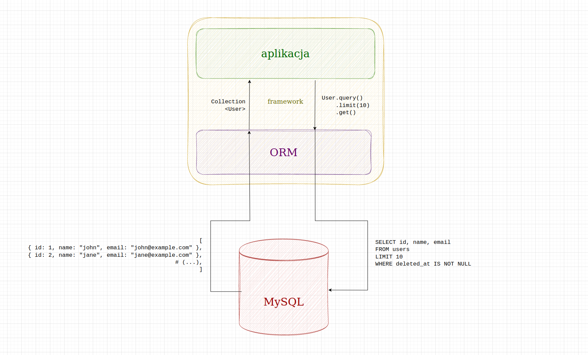

Mapowanie relacyjno-obiektowe
Projektowanie i programowanie systemów internetowych I
wykład 9 z 15

mgr inż. Krzysztof Rewak
Zakład Informatyki, Wydział Nauk Technicznych i Ekonomicznych
Collegium Witelona Uczelnia Państwowa
Blumilk sp. z o.o.
Agenda
- Wady i zalety zapytań SQL
- Mapowanie relacyjno-obiektowe
- Active Record i Data Mapper
- Podsumowanie
SQL trzeba znać
SELECT users.id, users.email, profile.first_name, profile.last_name
FROM users
JOIN profiles on user.id = profiles.id
WHERE users.deleted_at IS NOT NULL
ORDER BY users.last_logged_at DESC
LIMIT 10
Bez względu na to, co zostanie przedstawione na tej prezentacji, generalnie dobrze jest znać i rozumieć podstawowe założenia SQL.
Zalety SQL
SQL ma niewątpliwie kilka zalet:
- jest raczej znany wszystkim - inżynierom, naukowcom i analitykom
- łatwo się go czyta i pisze
- mimo pewnych różnic praca z MySQL-em nie różni się bardzo od pracy z SQLite
- dostajemy dokładnie to, o co poprosiliśmy
Wady SQL
Niestety możemy wylistować również pewne wady:
- dostajemy dokładnie to, o co poprosiliśmy (a nie zawsze wiemy czego chcemy)
- z biegiem czasu spotkamy redundancję kodu
- tracimy kontrolę nad spójnością systemu
- tracimy elastyczność
- mimo podobieńst dialektów raczej przywiązujemy się na stałe do DBMS
Use case: soft delete
Wyobraźmy sobie, że mamy 15 tabel, każda z nich jest kilkanaście razy odpytywana w naszej aplikacji. Nowe zadanie w jirze opisuje funkcjonalność soft delete, czyli, że zamiast usuwać użytkowników, będziemy ustwiać im pole w kolumnie
deleted_at z nulla na timestamp z teraz.
Przy klasycznym wykorzystaniu kwerend SQL musimy... we wszystkich SELECTACH i UPDATACH dopisać
WHERE deleted_at IS NOT NULL, a DELETY zamienić na UPDATY ustawiające deleted_at na NOW()
Brzmi jak dużo pracy, którą koniecznie trzeba przetestować, a która może zemścić się w najgorszym momencie.
Use case: podział na użytkowników
Wyobraźmy sobie, że mamy tabelę z pracownikami, ale musimy podzielić ich na "aktywnych" i "nieaktywnych".
Możemy albo podzielić tabelę
employees na dwie, albo dorobić flagę is_acitve. W obu przypadkach musimy zmienić wszystkie zapytania, żeby obecnie działający kod nie przestał poprawnie fukcjonować.
Ponownie brzmi jak dużo pracy, którą koniecznie trzeba przetestować, a która może zemścić się w najgorszym momencie.
Use case: sprzedaż w wielu walutach
Wyobraźmy sobie, że mamy sklep internetowy, a właściciel "od jutra" chce zacząć sprzedawać produkty w różnych walutach.
Musimy przeprowadzić cenę z tabeli
products do prices, która będzie odwoływała się do currencies. "Jedyne", co nam zostaje to znaleźć wszystkie zapytania z ceną i dodać do nich JOINY do walut na podstawie... danych z profilu?
Tym razem brzmi jak bardzo dużo pracy, którą koniecznie trzeba przetestować, a która może zemścić się w najgorszym momencie.
Obiektowe bazy danych
Powiedzieliśmy już sobie na poprzednim wykładzie, że obiektowe bazy danych nie przetrwały próby czasu.
Były przede wszystkim wolne i za mocno przywiązane do swoich bazowych technologii. Ale przede wszystkim nikt ich nie znał, więc nikt im się ufał, więc nikt nie chciał na nich pracować.
ORM
Stąd też powstał pomysł, aby wykorzystać klasyczną relacyjnę bazę, a dopiąć do niej interfejs, który pozwoli na zarządzanie danymi w sposób obiektowy.

schemat działania systemu typu ORM
Highlights
Źródła i do dalszego poczytania